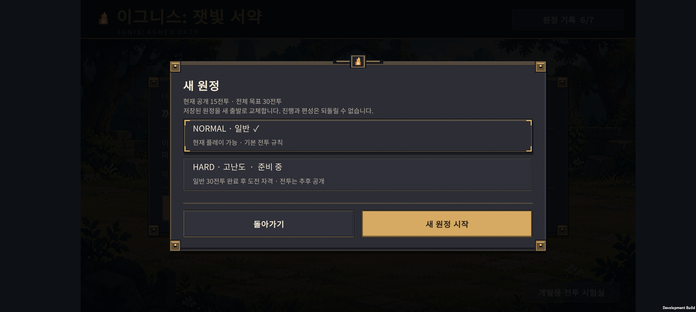
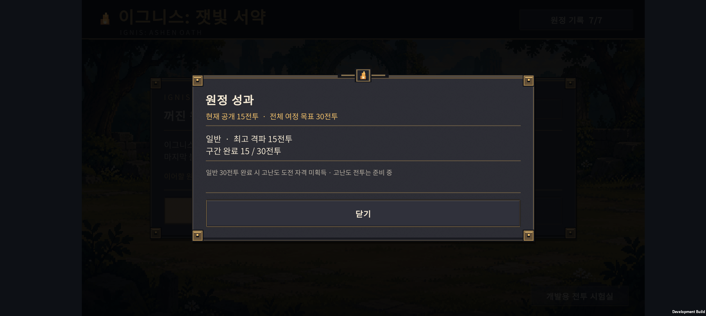

2026-10-24 · IGNIS: ASHEN OATH
현재 게임의 기본 모드를 NORMAL로 정리했다. HARD는 추후 개발할 모드로, 버튼만 표시하고 시작은 막았다. Easy 분리와 적 피해 20% 감소안은 사용자의 변경 요청에 따라 폐기했다. 기존 전투 수치·적 편성·소환 비용·확률은 그대로다.
현재 플레이 범위는 15전투, 첫 출시 목표는 30전투다. 당장은 Normal의 전투·성장·콘텐츠 완성에 집중한다. v0.26 난도 비교안의 Easy / Normal / Veteran 3단계 제안은 설계 이력이며 현재 구현 방향이 아니다.
1. 실제 변경
| 항목 | 이번 구현 |
|---|---|
| 새 원정 | NORMAL 고정 선택, HARD 준비 중 버튼, 기존 원정 교체 안내 |
| HARD | 비활성. 코드에서도 시작 및 Hard 저장 복원 거부 |
| 이어하기 | 일반 모드와 현재 전투 표시. 기존 원정은 Normal로 복원 |
| 원정 성과 | 최고 격파 전투와 완료한 구간을 별도 보관 |
| 15전투 완료 | 15전투 구간 완료로 기록. 30전투 완주로 계산하지 않음 |
| 미래 해금 | Normal 30전투 완료 시 Hard 도전 자격. Hard 전투 자체는 아직 미구현 |
| 저장 안전성 | 새 원정·패배로 최고 기록이 내려가지 않음. 손상된 성과 원문을 보존하고 갱신 중지 안내 |
홈에서 원정 성과를 열 수 있다. 새 원정과 성과창은 안쪽 여백 32px, 버튼 간격 16px, 하단 버튼 높이 64px를 사용한다. 난도를 선택할 수 있는 것처럼 보이는 Easy 옵션과 피해 감소 안내는 없다.

저장 구조
- 원정 키
ember.expedition.run.v013는 유지하고 내부 버전을 v4로 올렸다.Difficulty와ContentWaves를 저장한다. - 실제 v3의 준비·전투·승리 결과·패배 결과·원정 실패·15전투 완료 저장 6종을 Normal로 복원한다. 기존 v2의 10→15전투 이동과 보상 중복 방지 검사는 유지한다.
- 성과는
ember.expedition.progress.v027에 따로 저장한다. 결과 화면에서 바로 기록하므로 마지막 승리 후 다음 버튼을 누르기 전에 종료해도 놓치지 않는다. - 최고 격파와 구간 완료는 최댓값만 갱신한다. 이전 완료 저장을 다시 열어도 중복 보상이 생기지 않는다. 이번에는 재화 보상을 추가하지 않았다.
- 성과 형식은 향후 콘텐츠가 늘어나도 기존 15전투 완료를 허용한다. 실제 원정의 15→20→30 확장 시에는 해당 원정 저장의 진행·보상 마이그레이션을 별도로 추가해야 한다.
2. Normal 성장 순서 비교
전열 성장과 결합 재료 성장의 우선순위를 같은 시드로 비교했다. 게임 수치를 바꾸거나 자동 성장 기능을 넣은 것이 아니라, 현재 규칙을 측정하는 도구를 확장했다.
- 결합 우선(TargetFirst): v0.26의 기존 정책.
- 전열 우선(FrontFirst): 시작 기사가 기본형이면 두 번 전승해 E-KN-G로 분기 진화한 뒤 기존 우선순위로 돌아간다. 최종 기사까지 먼저 만드는 정책은 아니다.
- 7개 목표 × 분산·밀집 2개 진형. 각 시드에서 실제 소환·전승·진화·결합 명령을 사용한다.
- 시드 1
40으로 비교하고 별도 시드 20012040으로 확인했다. 별도 결과를 보고 수치를 조정하지 않았다. - 결합 우선의 시드 1~40 결과는 v0.26과 전투 결과·획득 기록·표본 행동 기록까지 일치했다.
- 15전투까지 각 정책은 소환 23회·460G를 썼다. 패배 이후에도 가상 승리 보상을 적용해 다음 전투를 측정하므로 개별 전투 승리와 무패 완주를 구분해야 한다. 아래 수치는 사람의 승률이나 결합체 하나의 순수 성능이 아니다.
별도 40개 시드 결과
각 칸은 분산 / 밀집, 분모는 각각 40이다. 결합명은 그 결합을 목표로 하는 성장 정책이다. 획득 실패 시드도 포함한다.
| 목표 | 5보스 승리: 결합 우선 → 전열 우선 | 10보스 승리: 결합 우선 → 전열 우선 | 15전투 무패 완주: 결합 우선 → 전열 우선 |
|---|---|---|---|
| 기사 최종 우선 | 40/40 → 40/40 | 40/40 → 40/40 | 40/40 → 40/40 |
| H-01 잿불 검위 | 40/40 → 40/40 | 36/40 → 36/40 | 36/40 → 36/40 |
| H-02 등불 성기사 | 40/40 → 40/40 | 39/39 → 39/39 | 38/39 → 38/39 |
| H-03 빙결 추적자 | 35/34 → 40/40 | 30/32 → 26/29 | 28/30 → 26/29 |
| H-04 융해술사 | 28/24 → 40/40 | 30/31 → 36/36 | 22/20 → 36/36 |
| H-05 성가 기수 | 30/28 → 40/40 | 37/37 → 39/39 | 27/25 → 39/39 |
| H-06 원정 유격대장 | 33/31 → 40/40 | 16/15 → 7/15 | 15/13 → 7/15 |
해석: 시작 기사를 분기 진화시키는 선택은 이 표본의 5보스 통과를 안정시켰다. H-04·H-05는 전체 진행도 좋아졌다. 반면 H-03·H-06은 10보스에서 남는 병목이 있어 ‘전열부터 키우면 모든 조합이 해결된다’고 볼 수 없다. 다른 동료에게 돌아갈 성장량과 편성 변화가 함께 발생하므로, 다음에는 이 두 정책의 10보스 편성·성장 배분·실제 스킬 기여를 점검한다. 이번에는 적 전체를 약화시키거나 특정 결합의 수치를 임의로 올리지 않았다.
15전투까지 결합 획득은 H-01/02/03/06 각 39회, H-04/05 각 38회였다. 전열 우선으로 H-04 평균 획득 시점은 7.39→7.45전투, H-05는 6.95→7.16전투로 늦어졌고 나머지는 같았다. 획득률·평균 시점도 패배 후 가상 진행을 포함한다.
시드 1~40 결합 우선 · 전열 우선 · 별도 시드 결합 우선 · 전열 우선 · 측정 방법
3. 검증
- SOL이 Core와 UI를 수정하고 ASTRA 작업에서 차이·저장 규칙·측정 결과를 검토했다.
- 순수 C# 검사: 진행 기록 47개, 기존 원정 1,753개, 전투 3,011개 통과.
- 실제 Unity JsonUtility: v3 저장 6종→v4, 성과 왕복, 15완료와 미래 30완료 경계, Hard 실행 차단 총 26개 검사 통과.
- 기존 Unity 검사: 기록 저장, 아군 크기 460개, 폐광 283개, 성채 264개, 숲 258개, 표시 순서 12개, 드래그·JSON 17개, 전투 결과·보스 피격 검사 통과.
- Unity Android 빌드 종료 코드 0. Buddy2에 업데이트 설치 성공.
- Buddy2의 기존 v3 1전투 저장을 불러와 Normal로 표시되는지 확인했다. 새 원정 창의 Hard 버튼과 취소 조작 후 기존 원정 JSON이 그대로였다.
- 기존 원정을 이어 실제 첫 전투 승리 → 60G·최고 격파 1 기록 → 앱 강제 종료·재실행 후 보존을 확인했다. 원정은 v4 Normal/15전투로 저장됐다.
- v0.26 Core로 만든 15전투 완료 저장을 임시로 넣어 소급 기록·Hard 잠금·새 원정 이후 성과 보존·재실행을 확인했다. 이 저장은 검증용 승리 결과로 생성했으며 이번 폰 검사에서 15전투를 전부 직접 플레이했다는 의미가 아니다.
- 새 원정·성과 화면을 실기기 캡처로 확인했다. 문구·하단 버튼의 잘림이나 겹침이 없었다.
- 잘못된 성과 버전 999를 임시 주입해 안내 표시와 새 원정 저장 후 원문 보존을 확인했다. 검사 구간의 Unity·AndroidRuntime 로그에 예외·FATAL 오류가 없었다.
- 테스트 전에 이 세션에서 새로 백업한 사용자 저장(1전투·40G·기본 동료 3명)을 복구하고 전체 PlayerPrefs 바이트 일치를 확인했다. 검증용 완료·손상 기록은 폰에 남기지 않았다.
- APK SHA-256:
3E70ECF08E93FE8B88E437994A948B19D84006C66373A72232C31BE006C8181E.

캡처의 완료 기록은 검증용이다. 현재 실행 가능한 범위는 여전히 15전투이며, 미래 30전투 완료 조건은 합성 저장으로 경계만 검사했다. 사람의 최종 난도 체감·장시간 성능·Hard 콘텐츠를 검증한 결과가 아니다.
4. 다음 순서
- Normal의 H-03·H-06 성장 경로와 10보스 공략을 점검한다. 성장 선택의 의미를 유지하면서 과한 편성 격차부터 줄인다.
- Normal 16~20전투의 새 지역·졸개·정예·보스·이야기를 만든다.
- 21~30전투와 결말, 한영 문자열·언어 전환을 연결한다.
- Normal 전체가 갖춰진 뒤 Hard의 적 편성·패턴·보상 차이를 설계한다.
현재는 Normal 15전투 시제품이며, Hard·30전투 전체·새 시작 편성 보상·광고·출시 설정은 완성되지 않았다.